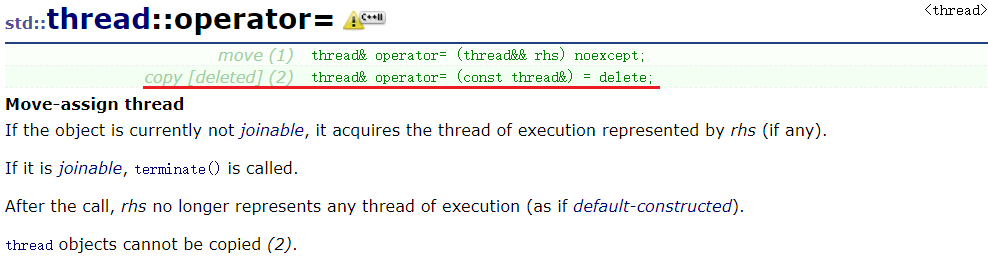

一个理解问题,这是刚开始想错的,线程所属权的转移是为了方便对线程进行控制(比如 join()、detach()这些),而不是为了转移所属权之后,线程函数还会再次重新运行(这是错误的)。
void some_function();
void some_other_function();
//创建一个线程对象t1并启动了一个线程
std::thread t1(some_function);
//t1的线程所有权移交给了t2,此时线程函数some_function与t1无关,只与t2有关
std::thread t2=std::move(t1);
//这里又开启了一个线程并与t1对象关联 std::thread创建了一个临时对象,临时对象移交线程所有权是自动和隐式的
t1=std::thread(some_other_function);
//构造了一个线程对象但是未与任何运行线程有关系
std::thread t3;
//t2的线程所有权转移给了t3
t3=std::move(t2);
//此时t1已经关联了一个运行线程,再把t3的线程所有权移交给t1就会触发std::terminate()
t1=std::move(t3);
#include
#include
#include
using namespace std;
void threadfun(){
cout << "exec threadfun()" << endl;
}
class scoped_thread{
private:
thread m_t;
public:
explicit scoped_thread(thread _t):m_t(move(_t)) { // <===================
cout << "exec scoped_thread(thread)" << endl;
}
~scoped_thread(){
cout << "exec ~scoped_thread()" << endl;
if(m_t.joinable()){
m_t.join();
}
}
};
void fun() { //此函数直接在main函数中调用即可
cout << "into fun()" << endl;
thread t(threadfun);
scoped_thread s_thread(move(t)); //转移了线程所有权 <===================
sleep(1);
cout << "out fun()" << endl;
}
int main(){
fun();
return 0;
}
/* 执行结果:
into fun()
exec scoped_thread(thread)
exec threadfun()
out fun()
exec ~scoped_thread()
*/
在编写上面代码的时候,我产生了疑惑,当上面两个位置去除move()时编译器会报错。
error: use of deleted function 'std::thread::thread(std::thread&)'| //此报错出现在删除move()函数时出现
我当时看到这个错误也是不明白什么意思,不过最后在网上查找一番,发现是std::thread自身的构造函数问题。通常C++内置的类都有默认构造函数、拷贝构造函数,赋值运算符重载函数,在C++11后,又增加了移动构造函数,移动赋值运算符重载函数。下面是在www.cplusplus.com上查到的thread相关的构造函数。
可以看到原来固有的拷贝构造函数和赋值运算符函数已经被删除了,取而代之的是移动系列函数。所以对上面疑惑的解释,不使用move()函数这两个位置会调用拷贝构造函数,但是已经被删除了,所以需要使用移动构造函数。